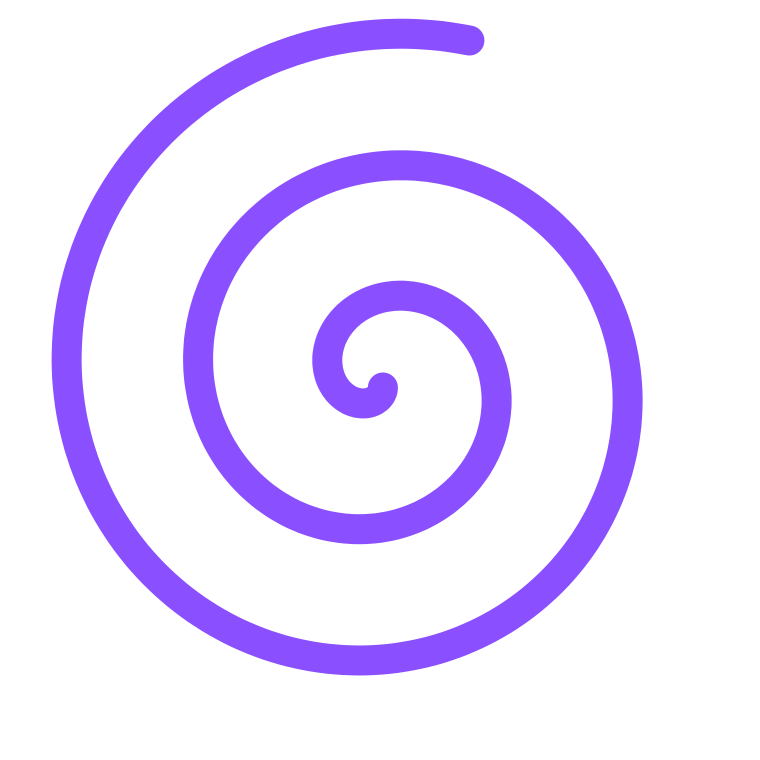
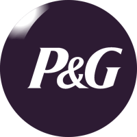
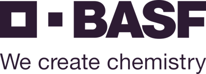
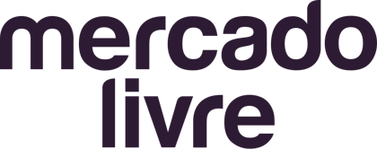
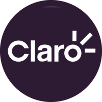

Tem post, anúncio e agência rodando, e o cliente ainda escolhe pelo preço?
A Casa Circe dá direção de marca ao seu marketing digital. Assim, cada post, campanha e mensagem trabalha a favor do mesmo resultado.

Vai estruturar o marketing agora.
E quer começar com a base firme, para não refazer tudo daqui a dois anos.
Já investe, e o resultado não acompanha.
A verba cresceu, o post sai toda semana, e o cliente ainda compara pelo preço.
Tem time, agência e ferramentas.
Cada um faz bem a sua parte. Falta alguém costurando tudo na mesma direção.
Os três momentos têm a mesma raiz.
Quando a marca não tem uma direção combinada, o post vai para um lado, o anúncio para outro e o atendimento para um terceiro. Cada real investido rende menos, e a conta pesa mais conforme a empresa cresce.
Um exemplo
Duas padarias na mesma rua. Mesmo aluguel, mesma farinha, folha parecida.
Uma vende o pão de queijo a R$ 6. A outra cobra R$ 9 e tem fila no sábado. Os R$ 3 de diferença vêm do que ela construiu na cabeça de quem compra. Isso é marca.
R$ 6
Padaria da esquina
R$ 9
Padaria com fila
2×
Marcas percebidas como diferentes, de um jeito que importa para quem compra, conseguem cobrar até o dobro do preço médio da categoria.
Fonte: Kantar, Blueprint for Brand Growth.
Antes de qualquer ação ir para a rua, a marca responde a cinco perguntas. Elas soletram o nosso nome.
Crença
O que a marca acredita.
Inflexão
A tensão em que ela entra.
Resultado
A promessa que ela entrega.
Código
Como ela fala e se comporta.
Evidências
O que prova tudo isso.
Se não está no mapa, a ação espera.
Nossa trajetória


Remessa OnlineUnico
Consórcio Kawasaki
Trabalhos da trajetória de quem faz a Casa Circe. Ver todos os cases
BASF Agro
Posição em relevância digital do setor
O desafio
A pandemia derrubou as feiras, principal vitrine da marca.
O que fizemos
Proximidade virou o critério de cada projeto, conteúdo e canal.
300% ao ano em SEO, de 2021 a 2024. 16 prêmios do agro.
Remessa Online
Churn, a taxa de clientes que vão embora
O desafio
Na atualização anual de cadastro, a maior parte das empresas clientes ia embora.
O que fizemos
Educação sobre a marca, o tamanho da empresa e a regulação do câmbio.
Consórcio Kawasaki
Custo por contato
O desafio
Cada contato custava caro e chegava com pouca chance de virar venda.
O que fizemos
Mídia reorganizada em torno da qualidade do contato.
A qualidade acompanhou, com recorde de vendas.
Preço e valor
Aluguel, folha e margem explicam uma parte do preço. A outra parte é o que a sua marca conquistou, e dá para acompanhar mês a mês.
Na primeira conversa, você conta o momento da empresa e a gente mostra por onde começaria. Parceria e indicação também são bem-vindas.